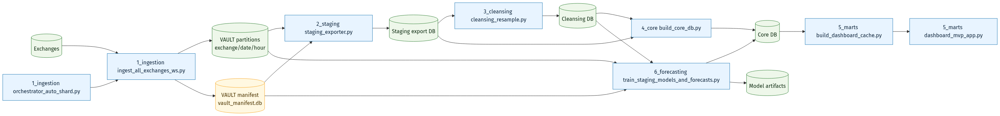
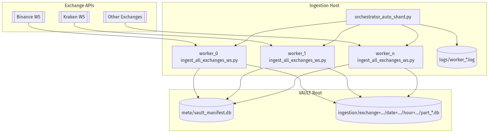
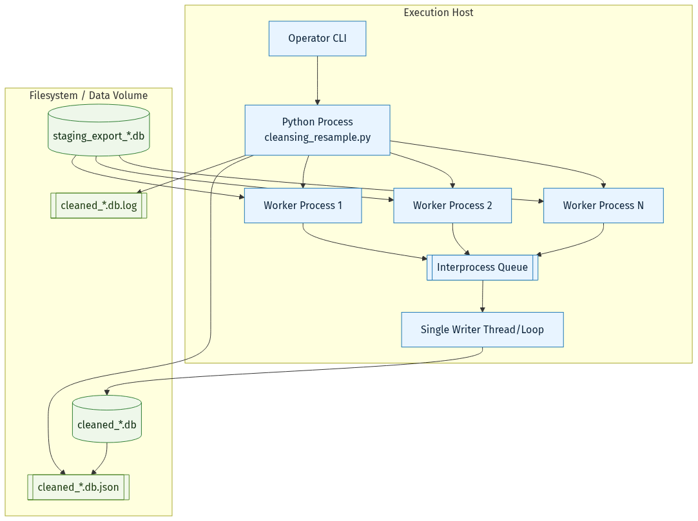
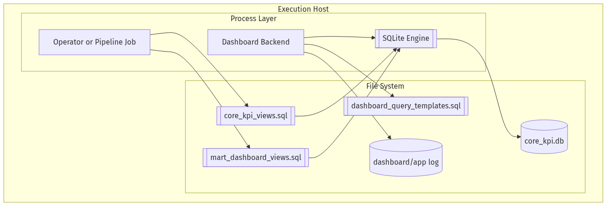
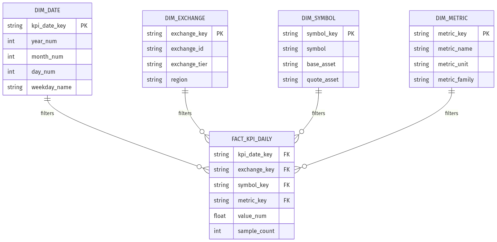
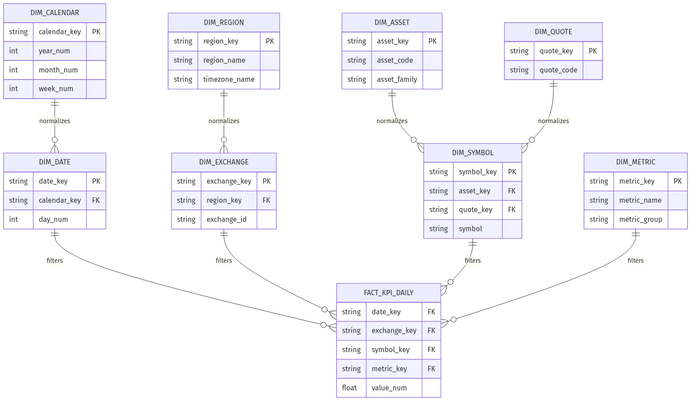
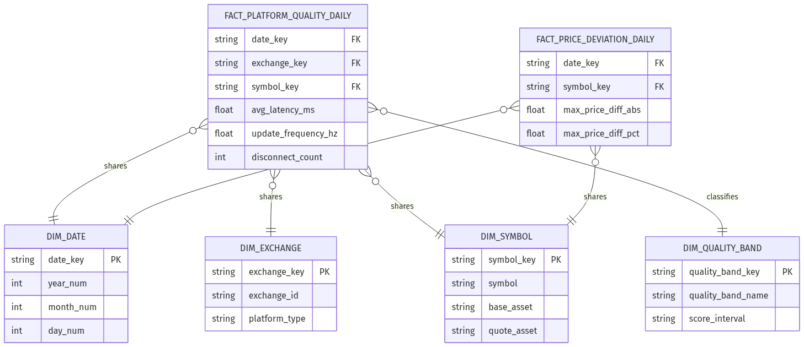

Crypto DWH Leitfaden
fuer Data Engineers
Datenfluss,
Verarbeitung, Deployment pro Schritt
Trainingsfolien fuer Data-Engineering-Auszubildende
- Datum: 2026-02-26
- Fokus: Von Rohdaten bis Data Mart und Dashboard
Lernziele
Nach dieser Session koennt ihr:
- den End-to-End Datenfluss der Pipeline erklaeren.
- pro Schritt Zweck, Input, Output und Deployment verstehen.
OLTP und OLAP in dieser Architektur
korrekt einordnen.Star, Snowflake, Galaxy und
Data Mart am Projektbeispiel unterscheiden.
Agenda
- Problem und Zielbild
- Pipeline-Schritte mit Deployment-Diagrammen
- ETL, OLTP, OLAP im Projektkontext
- Data Mart + Schema-Patterns (Star/Snowflake/Galaxy)
- Operativer Leitfaden fuer den taeglichen Betrieb
Problem und Zielbild
Problem
- Gleiche Coins haben je Exchange unterschiedliche Preise.
- Plattformqualitaet (Latency, Update-Frequenz, Disconnects)
schwankt.
- Ohne saubere Zeitausrichtung sind Vergleiche unfair.
Zielbild
- Nachvollziehbare DWH-Pipeline von Ingestion bis Mart.
- Vergleichbare KPI je Symbol und Exchange.
- Dashboard als schneller Analysezugang.
End-to-End Datenfluss
(Uebersicht)

ETL/ELT in diesem Projekt
Praktische Sicht
- E (Extract): WebSocket-Ticks und Connection-Events
aus Exchanges.
- L (Load): Zuerst in Raw-DBs (OLTP-nah,
write-optimiert).
- T (Transform): In Staging/Cleansing/Core/Marts fuer
Analyse.
Warum so?
- Online-Ingestion bleibt stabil.
- Batch-Transformationen koennen reproduzierbar laufen.
OLTP vs OLAP im Projekt
OLTP-Zone (schreibintensiv)
vault2/ingestion/exchange=<id>/date=<YYYY-MM-DD>/hour=<HH>/part_*.db- viele Inserts, laufender Betrieb, technische Rohdaten
OLAP-Zone (lese- und
analyseintensiv)
cleaned_*.db, core_kpi.db,
Mart-Views/Cache- aggregierte KPI, zeitliche Vergleiche, Dashboard-Abfragen
Verarbeitung
- Orchestrator shardet Exchanges auf Worker-Prozesse.
- Worker schreiben Ticks und Events kontinuierlich in SQLite.
- Restart- und Supervision-Logik stabilisiert den 24/7-Betrieb.
Ergebnis
- Rohdaten mit Ingestion-Timestamp als Basis fuer spaetere KPI.
Deployment

Schritt 2: Staging
(Entkopplung)
Verarbeitung
- Geplanter Job exportiert ein Zeitfenster (z. B. letzte 24h).
- Optional inkrementell ueber Watermark-State.
- Lauf erzeugt Datenexport plus Metadaten-JSON.
Ergebnis
- Stabile Input-Scheibe fuer Cleansing und Core.
Deployment

Schritt 3:
Cleansing (Zeitliche Vergleichbarkeit)
Verarbeitung
- Resampling auf ein einheitliches Raster (z. B. 60s Bins).
- Fill-Strategien:
observed, forward_fill,
optional interpolation.
- Qualitaetsflags markieren
missing, stale,
Alter der Werte.
Ergebnis
- Vergleichbare Zeitreihen pro
(exchange_id, symbol).
Deployment

Schritt 4: Core
(KPI-Berechnung, OLAP Kern)
Verarbeitung
- KPI-Views fuer:
latency_msupdate_frequency_hzdisconnect_countprice_diff_abs / price_diff_pct
- SQL Assertions validieren Datenqualitaet und Vollstaendigkeit.
Ergebnis
- Konsistente KPI-Schicht als Single Source of Truth.
Deployment

Schritt 5: Marts
(Analyse-Verbrauchsschicht)
Verarbeitung
- Mart-Views formen KPI fuer konkrete Analysefragen um.
- Dashboard liest nur konsumfertige Views/Cache-Tabellen.
- Keine KPI-Neuberechnung in der UI.
Ergebnis
- Schnelle, konsistente Auswertung fuer Fachnutzer.
Deployment

Data Mart im Projekt
Was ist der Data Mart hier?
- Themenbezogener Ausschnitt fuer Dashboard-Konsum.
- Fokus: Preisabweichung und Plattformqualitaet.
Konkrete Objekte
vw_mart_dashboard_platform_quality_dailyvw_mart_dashboard_price_deviation_dailyvw_mart_dashboard_price_curve_24h_binance
Star Schema (einfach,
schnell konsumierbar)
Empfehlung: - fuer stabile Dashboard-KPI mit klaren Dimensionen.

Snowflake Schema
(staerker normalisiert)
Empfehlung: - wenn Dimensionen wachsen und Redundanz gesenkt werden
soll.
Trade-off: - weniger Duplikate, aber komplexere Joins.

Galaxy Schema
(mehrere Facts, geteilte Dimensionen)
Empfehlung: - wenn mehrere Analysebereiche parallel laufen. - hier:
Plattformqualitaet und Preisabweichung als getrennte Facts.

Wann welches Schema?
- Star: Startpunkt fuer MVP-Dashboard, einfache SQL,
schnelle Lieferung.
- Snowflake: bei vielen Dimension-Attributen und
Governance-Fokus.
- Galaxy: bei mehreren Fact-Domaenen mit gemeinsamen
Dimensionen.
Praxisempfehlung: - MVP mit Star starten, bei Bedarf zu
Snowflake/Galaxy evolvieren.
Operativer Leitfaden
(taeglicher Ablauf)
- Ingestion laeuft kontinuierlich (Health und Disconnects
beobachten).
- Staging exportiert den Zielzeitraum.
- Cleansing erzeugt zeitlich ausgerichtete Serien.
- Core berechnet/validiert KPI.
- Mart-Views und Cache refreshen.
- Dashboard fuer Analyse freigeben.
Qualitaets-Checkliste
fuer Auszubildende
- Sind alle Zeitstempel in UTC?
- Ist Symbol-Mapping exchange-uebergreifend konsistent?
- Sind Missing/Stale-Werte sichtbar markiert?
- Ist die Definition von “Connection Drop” dokumentiert?
- Werden KPI nur im SQL-Layer gerechnet (nicht in UI)?
PDF-Erzeugung aus Markdown
Beispiel mit Marp CLI:
npx @marp-team/marp-cli docs/7_presentation/crypto_dwh_data_engineering_leitfaden_slides.md --allow-local-files -o docs/7_presentation/crypto_dwh_data_engineering_leitfaden_slides.pdf
Die Datei ist Marp-kompatibel und fuer direkten PDF-Export
vorbereitet.